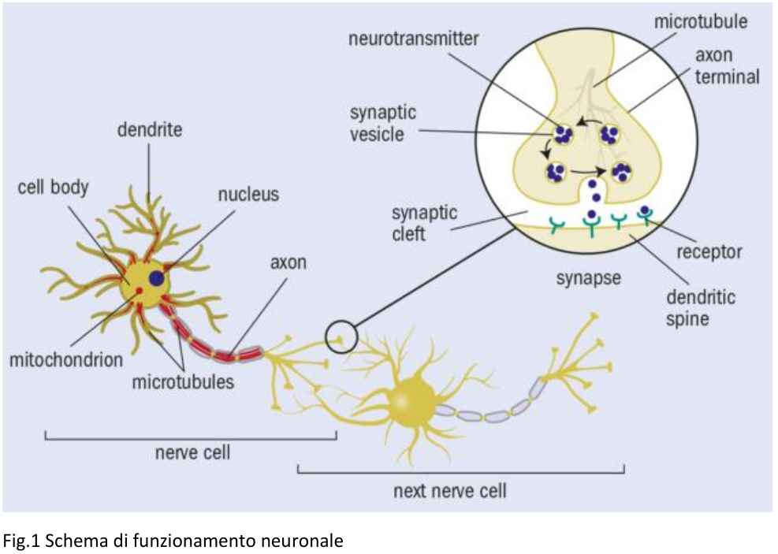
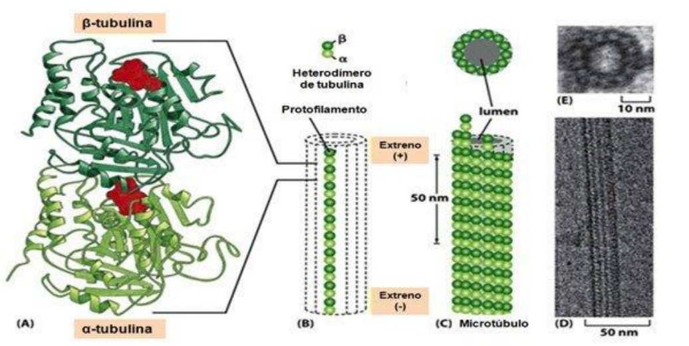
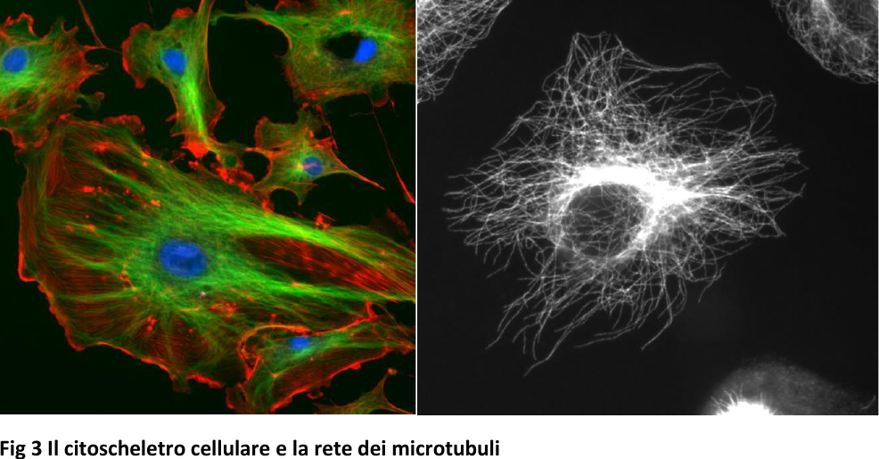
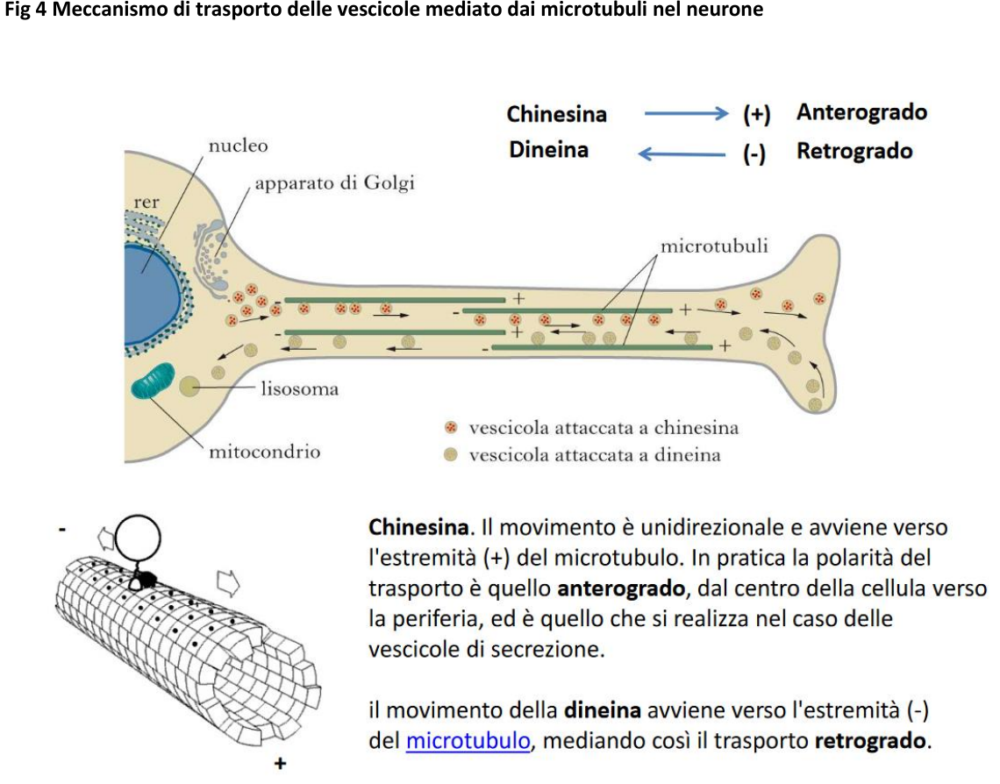

Centro San Domenico
Piazza San Domenico 12
40124 BOLOGNA
tel. 051 581718
http://www.csdricerca.com/
Bologna, 7 giugno 2022
Agli amici degli
Incontri Interdisciplinari
Carissimi,
ho appreso ieri sera che, causa lavori in corso, non è possibile accedere con l’auto al Convento San Domenico. Questo crea problemi al sottocritto e ad altri che venivano in presenza.
Dopo una breve consultazione abbiamo optato per incontrarci on line come durante la pandemia.
Ci rivedremo lunedì 20 giugno, alle ore 21, come previsto.
Animerà l’incontro la prof. Rita Casadio sul tema:
“Fenomeni quantomeccanici cerebrali”.
Per partecipare on-line tramite Google-Meet, si deve avere un account Google (è gratuito). In questo caso, ma solo per chi non ha ancora partecipato in questo modo, è indispensabile prenotarsi, via e-mail, entro il venerdì 17, per ricevere il collegamento (link). E-mail: padridom@tsc4.com. Il collegamento verrà inviato alle 20,50.
In attesa di incontrarci, un cordiale saluto anche a nome di padre Giovanni
fra Sergio Parenti O.P.
Allegato: il contributo della prof. Casadio
Per informazioni, il cell. di fra Sergio Parenti è 3478023905
Breve resoconto dell’Incontro Interdisciplinare del 20 giugno 2022
CASADIO - Ho focalizzato la prima parte della mia relazione sulla fisiologia della trasmissione nervosa, altrimenti non si capisce di che cosa stiamo parlando e a che livello dobbiamo scendere per giustificare una interpretazione quanto-meccanica di quelle che sono le trasmissioni a livello delle nostre sinapsi. La meccanica quantistica è l’unica teoria che giustifica la formazione di molecole a partire dai componenti fondamentali e le loro proprietà fisico-chimiche, tutte! Con la meccanica quantistica noi descriviamo la densità elettronica delle nostre molecole, quindi è fonte di interpretazione di tutta la chimica inorganica e organica delle reazioni chimiche e, di conseguenza, anche della biochimica. Qui, però, le molecole sono composte da migliaia e decine di migliaia di atomi. Fare simulazioni al computer per interpretare in maniera quanto-meccanica quello che avviene diventa tecnicamente troppo difficile, a differenza delle reazioni con molecole piccole come quelle dell’acqua. Tuttavia possiamo “scalare” il comportamento di una molecola d’acqua per simulare quello di una grande massa d’acqua. Ora, siamo riusciti a simulare il comportamento di una proteina o di altre macromolecole. Tutta la materia biologica sarebbe quindi descrivibile in termini quanto-meccanici, anche se “scalando” (interpretare su larga scala con un procedimento bottom up) quello che possiamo calcolare nel piccolo, così come possiamo “scalare” il comportamento di una molecola d’acqua per simulare quello di una grande massa d’acqua.
Abbiamo però varie complessità da descrivere: non ci sono solo molecole, ma condensati di molecole, come le cellule. Dobbiamo renderci conto che la meccanica quantistica ha certe proprietà a livello microscopico: se voglio scalare i fenomeni avrò delle proprietà che posso rintracciare e spiegare soltanto in termini quanto-meccanici? Questa è la domanda fondamentale. Oggi ormai la ricerca in campo biofisico ha strumenti tali per cui si riesce a sostenere che esiste una biofisica quantistica. Cioè i fenomeni del comportamento quanto-meccanico possono essere in parte comprovati anche se il sistema ha le dimensioni di un uomo o di un animale, di tessuti, organi …
Esempi sono le mutazioni a livello del DNA, i processi di foto-transduzione a livello visivo (come i fotoni vengono elaborati a livello delle molecole che costituiscono il nostro apparato di ricezione visiva), la fotosintesi clorofilliana... Il fenomeno più carino studiato è la magneto-recezione per cui alcuni uccelli riescono ad orientarsi anche al buio interagendo col campo magnetico terrestre. Anche le Carette, tartarughe marine presenti anche nel Mediterraneo, riescono in questo modo a percorrere migliaia di chilometri per tornare nel luogo dove sono nate. Ne deriva che se siamo fatti di molecole, pur crescendo di scala potremmo avere delle reminiscenze di questi comportamenti quanto-meccanici.
Si parla di emergenza delle proprietà. Tuttavia la quantomeccanica, potrebbe essere la ragione di alcuni comportamenti anche a livello mesoscopico. I modelli servono a giustificare gli osservabili sperimentali: la teoria prevede e giustifica la sperimentazione.
Gli effetti più salienti della biologia quantistica li abbiamo in ambito neuro-scientifico. Le neuroscienze ci portano a parlare di teoria della conoscenza, di meccanismi di coscienza e consapevolezza… Dobbiamo fare attenzione, però. Fu fatta un’ipotesi e oggi abbiamo dati sperimentali che confermano in qualche modo questa ipotesi. Iniziamo cercando di capire la complessità di un processo neurale. processo neuronale consiste almeno nella interazione di due cellule. In figura 1 (Ref: https://physicsworld.com/a/do-quantum-effects-play-a-role-in consciousness ) vedete un classico esempio di funzionamento di due cellule nervose che si trasmettono un segnale.

Funzionamento vuol dire che c’è trasmissione di informazione e quindi un processo neuronale e un fenomeno di trasmissione di informazione. In figura 1, la cellula nervosa, come le altre cellule, è caratterizzata da un nucleo, da un corpo somatico cellulare, dalla presenza di mitocondri. I mitocondri sono organuli inclusi nelle cellule degli eucarioti, che producono energia, sotto forma di ATP.
Il neurone ha come caratteristica delle terminazioni, i dendriti, che servono ad interagire con le altre cellule nervose della corteccia cerebrale, dando luogo in tridimensione a quella che è nota come rete neuronale. Le cellule nervose sono poi caratterizzate dalla presenza di una lunga estroflessione del corpo cellulare (l’assone) caratterizzato dalla presenza dei microtubuli, fibre proteiche molecolai su cui dobbiamo focalizzarci per capire la teoria di Penrose. Alla terminazione degli assoni si trovano le sinapsi, spazi molto piccoli (nel dettaglio di figura 1) in cui avviene la trsmissione dell’informazione mediante rilascio dei neurotrasmettitori (ordine di grandezza lineare il micron). Trasmettere informazione significa sostanzialmenteche i neurotrasmettori rilasciati a livello delle sinapsi trovano i recettori specifici nelle membrane dendritiche delle altre cellule innescando la trasmissiome chimica del segnale nelle cellula successiva. Le sinapsi sono specializzate per tipologia di neurotrasmettitori. I neurotrasmettitori sono più di 40 tipi di molecole (ormoni, aminoacidi, altro). Trasmettere informazione significa eccitare una sinapsi avviando (o bloccando) un processo. Queste modalità caratterizzano la trasmissione nervosa in tutto il mondo animale, uomo compreso.
Si stima che nell’uomo la superficie corticale sia di circa 2600 cm quadri, i neuroni circa 30 miliardi, le sinapsi oltre mille miliardi e 10 elevato a un milione il numeri dei circuiti che si potrebbero formare, dove per circuito si intendo l’organizzazione dei neuroni che si trasmettono informazione.
I microtubuli costituiscono la struttura portante dell’assone e servono da guida per lo scivolamento delle vescicole cariche di neurotrasmettitori prodotte dalla cellula fino al raggiungimento della terminazione, dove fondendosi con le membrane sinaptiche permettono il rilascio dei neurotrasmettitori nello spazio sinaptico (fig1.).
Ora, se vogliamo capire gli effetti quantistici a livello di neurotrasmissione dobbiamo entrare nel dettaglio della organizzazione molecolare dei microtubuli. I microtubuli sono una struttura portante nel citoplasma, organizzata in un intreccio di fibre di sostegno molto organizzate. Un microtubulo deriva dalla polimerizzazione di una proteina, la “tubulina”, come indicato in figura 2.

Fig 2. Organizzazione della tubulina nel microtubulo (https://www.chimica-online.it/biologia/microtubuli.htm)
In Fig 2 è rappresentata la struttura della tubulina ( sotto forma di dimero α/β) con dettaglio atomico (A) e con il sito di legame del GTP (Guanidin trifosfato). Il legame con il GTP favorisce la formazione del protofilamento (B) che a sua volta da origine al microtubulo Un’organizzazione di protofilamenti danno origine al microtubulo (C). Più microtubuli danno origine a fibre di microtubuli (D). Queste fibre sono tipiche di tutte le cellule di eucarioti e risultano ad oggi coinvolte in fenomeni molto importanti, inclusa la divisione cellulare. Nelle cellule nervose sono la struttura portante del neurone (figura 3)
JULVE - Percorrono il neurone nella sua lunghezza? Possono essere come i ferri nel cemento armato?
CASADIO - Ottima analogia! Vediamo ora il citoscheletro della cellula (figura 3).

Un po’ di esempi in figura 3 (https://it.wikipedia.org/wiki/File:FluorescentCells.jpg), dove una tecnica di indagine che prevede la marcatura con molecole fluorescenti evidenzia il citoscheletro cellulare (in blu, a sinistra il nucleo della cellula). Il citoscheletro non contiene solo i microtubuli, evidenziati in bianco su fondo nero nella seconda parte di fig 3.
Cosa sappiamo oggi sulla funzione dei microtubuli?
Fig 4 (modificata da https://www.treccani.it/enciclopedia/microtubulo) schematizza lo stato dell’arte. Secondo gli studi correnti, le vescicole contenenti i neurotrasmettitori scivolano lungo la superficie del microtubulo grazie alla mediazione di due proteine, rispettivamente la chinesina per il movimento anterogrado (verso il rilascio all’esterno nello spazio sinaptico) e la dineina per il movimento retrogrado (verso l’interno).
Il microtubulo ed il movimento di vescicole che contengono i neurotrasmettitori è documentato sperimentalmente. I dendriti possono ricevere segnali e accumularli affinché la cellula possa dare avvio al processo di sintesi dei neurotrasmettitori e formare le vescicole (con la mediazione dell’apparato del Golgi). Le vescicole contengono i neurotrasmettitori da rilasciare o quelli dei segnali in arrivo. I microtubuli servono da supporto per il loro cammino in una direzione o nell’altra. Le due molecole specifiche trascinerebbero le vescicole scivolando sulla superficie esterna del microtubulo ed utilizzando l’interazione con la superficie polare del microtubulo (inserto in fig 4)

A questo punto spero sia chiara almeno per grandi linee la struttura portante dei meccanismi che danno luogo alla trasmissione dell’informazione a livello cerebrale. Ora è questa la nostra coscienza? Possiamo discuterne. Sicuramente il microtubulo per la sua struttura è la macromolecola più adatta ad una trasmissione quantistica. Cerchiamo di capire in che modo.
Dove sono gli effetti quantistici? Sovrapposizione degli stati, coerenza, tunnelling e entanglement… sono tutti fenomeni che caratterizzano la materia nello stato microscopico.
Che cos’è la coscienza quantistica?
Penrose elabora negli anni ‘80 la teoria secondo cui la coscienza potrebbe essere il risultato di fenomeni quantistici. Si appoggia soprattutto ad alcune scoperte del medico-fisiologo Stuart Hameroff, che suggeriva i microtubuli come sede eventuale di questi fenomeni. Allora si sapeva molto poco sui microtubuli e molte delle ipotesi fatte si sono rivelate corrette.
I microtubuli sono la struttura più appropriata per pensare ad una “risonanza orchestrata di gruppo”. Il microtubulo ha la possibilità di sovrapporre delle funzioni d’onda di orbitali di probabilità di densità elettronica, tra una molecola e l’altra. Il microtubulo non viene più considerato come una struttura dove c’è l’elettrone singolo sull’atomo singolo, ma la struttura dove avviene la formazione di una struttura “condensata” - come viene definita - e questa condensazione permette risonanza e quindi coerenza di stati quantistici. Penrose, essendo studioso degli effetti quantistici gravitazionali, cerca di ricondurre a queste sue scoperte le sue intuizioni, secondo cui la struttura del microtubulo permette una coerenza degli stati quantistici nelle sue singole porzioni: il segnale (la perturbazione) viaggia in esso secondo una coerenza quantistica. Si ha così la possibilità di “orchestrare” la trasmissione di questa coerenza. La coerenza viene mantenuta dalla struttura del microtubulo. La coerenza è tuttavia interrotta quando si verifica la trasmissione, in questo caso il trasporto delle vescicola (decoerenza). Quand’è che sappiamo se il gatto è vivo o morto? Quando apriamo la scatola. Nel nostro caso si ha decoerenza quando si ha l’aggancio di una molecola che porta in giro una vescicola contenente dei neurotrasmettitori.
La riduzione obbiettiva orchestrata (ORCH-OR) consiste quindi nella capacità del microtubulo di mantenere la coerenza (o sovrapposizione degli stati delle funzioni d’onda) grazie alla sua geometria, fino al momento della decoerenza dovuta all’aggancio della molecola trasportatrice.
Penrose e Hameroff suffragano le loro affermazioni con gli effetti degli anestetici, che perturbano l’organizzazione strutturale dei microtubuli e perturbano la coerenza quantistica.
La coscienza sarebbe dunque un fenomeno quantistico e come tale potrebbe sopravvivere alla morte fisica del cervello per rimanere sotto varie forme nel multiverso, in quanto in base alla legge di conservazione dell’energia, l’informazione quantistica non può essere distrutta.
Esistono altri punti di vista. Max Tegmark confuta la teoria della “riduzione obiettiva orchestrata” considerando che il tempo di eccitazione di un neurone è più lento di alcuni ordini di grandezza del tempo di decoerenza del microtubulo. Egli basa la sua definizione quantistica di coscienza come stato della materia, “il percettronio”, uno stato intermedio tra quello pienamente determinato e quello totalmente indeterminato, con caratteristiche emergenti ben precise che renderebbero ragione degli stati mentali di Quiniana memoria.
Esistono poi altre teorie basate sulla esclusività individuale della geografia delle sinapsi. Siamo individui diversi. Anche due gemelli identici hanno reti di sinapsi completamente diverse. Così nasce la teoria del “connettoma” di Sebastian Seung: io sarei la geografia delle mie sinapsi.
Ci sono alcune affermazioni interessanti. Robert Lanza, alla domanda se l’anima esiste, risponde che siamo immortali ed esistiamo al di fuori del tempo! La conservazione dell’informazione è indipendente dal substrato…
Oggi la ricerca sperimentale nel settore è molto attiva, a tal punto che si parla di biofisica quantistica (https://physicsworld.com/a/do-quantum-effects-play-a-role-in-consciousness). Gli esperimenti pubblicati su importanti riviste del settore indicano che esistono in effetti fenomeni quantististici documentabili. Fettine di cervello vengono eccitate chimicamente e si è visto che c’è una emissione proporzionale al numero di sinapsi nella sezione della fettina, mostrando una evoluzione di complessità dal topo all’uomo. L’effetto degli anestetici è stato studiato e conferma che perturbando la struttura ordinata dei microtubuli si perde la loro capacità di mantenere coerenza. Anche noi riusciamo ad avere un comportamento secondo compasso magnetico (la magneto-recezione che abbiamo visto nel mondo animale). C’è l’entanglement cognitivo nell’uomo: trasmissione a distanza del comportamento di alcune molecole… Questo, come vedete, è un settore di indagine estremamente vivo, che sta fornendo supporto all’interpretazione quantomeccanica.
PARENTI - Giorni fa uno è andato a fare una colonscopia di controllo (per prevenire la formazione di tumori), accompagnato da un amico medico. Ha scelto di fare una sedazione (poteva rifiutarla oppure scegliere l’anestesia totale). Fatta la sedazione, aspettava che gli facessero l’esame, un po’ doloroso, che dura una mezz’ora circa. Era comunque vigile. L’infermiera gli ha chiesto come si sentiva, se poteva alzarsi. Lo ha fatto. L’infermiera lo ha invitato a rivestirsi. Lui, perplesso, ha chiesto: “Ma non mi fate l’esame?”. “Già fatto!” gli ha risposto. Lui era rimasto sempre vigile, eppure non ne aveva coscienza. L’amico medico, riaccompagnandolo a casa, gli ha spiegato che le nuove anestesie inibiscono la memoria. Sicuramente la nostra conoscenza, anche intellettiva, dipende da trasformazioni di organi, quindi si può influire su ciò di cui siamo coscienti. La mia domanda è questa: “La conoscenza si riduce ad una trasformazione fisico-chimica, compresi gli aspetti quantistici?”.
CASADIO - Non so risponderti. Se una droga compete con i recettori a livello delle sinapsi, hai delle percezioni completamente diverse. La conoscenza secondo Kandel (premio Nobel) è una modificazione delle interazioni delle sinapsi. Finisce qui la conoscenza? Quella che riesco a misurare, sì. Ma a livello del singolo individuo, direi no. Dovremmo aprire un dibattito su quello che è il conoscere.
FALCIASECCA - Quello che dice il premio Nobel è secondo me “informazione”, non ancora “conoscenza”. La conoscenza è qualcosa di più che avere una modificazione da un segnale.
CASADIO - Dovremmo riprendere questo discorso: quando un’informazione elaborata diventa conoscenza?
FACCHINI - Poi dovremmo distinguere conoscenza quantistica e coscienza quantistica. Al fondo ci può essere una qualche analogia. Ma ho l’impressione che sia una scelta ideologica quando si parla di “coscienza” quantistica. Risponde ad un desiderio di immortalità.
CASADIO - Il problema è fisicamente termodinamico: in un sistema chiuso si produce quell’energia e l’energia si conserva… Dove finisce?
FACCHINI - Quella è una sorta di conoscenza, ma non riflessa. La coscienza, però, è una sorta di conoscenza.
CASADIO - In inglese “coscienza” ha vari livelli, a partire da “informazione”. Si dovrebbe capire che cosa intendiamo noi per “coscienza”.
FRATTINI - Col fatto della coerenza degli stati mentali, coerenti e quindi in fase tra loro, non ho la “coscienza” come l’intendo io. Però non penso ad un intento ideologico. Per me Penrose potrebbe essere una buona base di discussione.
CASADIO - Così abbiamo una buona base per andare avanti.
PARENTI - Resta la mia domanda: la trasformazione fisico-chimica dell’organo è conoscenza?
FRATTINI - E, poi, può la materia riflettere su se stessa?
PARENTI - Noi ammettiamo che l’animale senta di sentire, ma con organi diversi. Invece l’intelligenza è presente a se stessa.
CAPELLA - Non tornerei sulla distinzione tra conoscenza a coscienza. Avevamo concordato [nel convegno Scienza e metafisica] di chiamare “coscienza” la consapevolezza di ciò che facciamo; mi piacerebbe che si affrontasse il discorso della libera volontà.
CASADIO - Siamo fatti anche di materia, e la materia l’abbiamo descritta. Il problema che rimane è sempre quello di capire se basta la trasformazione fisico-chimica.